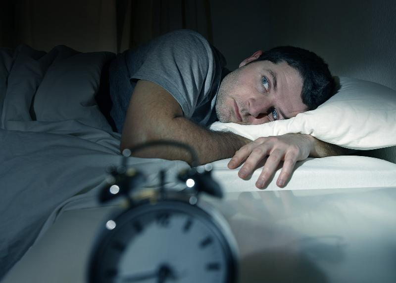

Self-Care
Practicing Self-Care
You're overwhelmed at work. You have a ton of projects piling up at home, and your calendar is packed with overdue tasks. To make room for all of this stuff, you skip lunch, stop going to the gym, and forget about your social life entirely. When we're stressed, self care is usually the first thing to go. And that only makes things worse. As fluffy and indulgent as the phrase "self care" may sound, it's just a few basic habits that are crucial to your functioning. Most of us grew up believing that the more you sacrifice, the bigger the reward.
In high school, for example, if you signed up for a debate tournament and forced yourself to stay up all night preparing. You figured pushing yourself to the point of exhaustion had to pay off. What happens the next day? Of course, you will so exhausted that you would barely be able to form coherent sentences, and fail. The point is, it's easy to take the "hard work pays off" adage too far, to the point that it becomes counterproductive. Your abilities are worn. Your skills aren't as sharp. You lose focus. You might think you're working hard and maybe you are in some ways, but you're not working efficiently. Therefore, you need to give yourself time.
Let us first look at this video where the speaker talks about her experience of neglecting self-care, and the tips she gives on how was she able to practice self-care.
Now ask yourself if you have every encountered this situation? Or situation similar to this? If you have, then now you know what to do.
Furthermore, ask yourself these questions: Are annoyed easily? Are always late? Have a hard time sleeping, or have anxiety attacks? Cannot remember the last time you did nothing? Constantly feel overwhelmed? Do you never cook, exercise, sleep enough, or reflect? Does a day seem foreign to you?
If you feel any of the above then you might be not be aware of the self-care that you need. Let us consider each of these situations and learn what to do.
Are you annoyed easily?
When we're centered and taking care of ourselves, we treat others with the same compassion we've been showing ourselves. But without time to ourselves, it's easy to let every little thing that doesn't go according to plan annoy or bother us. Just as they say before any airplane flight, you need to put your own oxygen mask on before you assist others. Because if you don't have your own survival mechanisms in place, you can't help anyone else.
What to do?
If you find this is you, don't beat yourself up. Show yourself some compassion. Recognize what's really going on here and begin to put a plan of action together—whether that is removing email from your phone on the weekend, saying "NO" more, or having a sit-down woth your mangaer about leaving work on time
Are you always late?
With overwhelm, we're always trying to get just one more thing done. And this "one more thing" usually correlates with being late. You're trying to get it all done and your intentions are good, but you being late only winds up creating more stress for you and may make who you're meeting with feel less valued.
You may also be late because your inspiration is gone and you're burnt out.
What to do?
Wherever you fall here, give it some thought. You may find you need to cut back on some projects. You may find you need to ask for time off (it can be unpaid if you don't have any). Or you may find you need some deep self-reflection and maybe even a retreat. But once you allow yourself to dig and see what's going on, the answers will come to you for what needs to be shifted in your life.
Activity:
Use the tips provided in Time Management to help you prioritize and schedule your time, set goals, and end procrastination.
Do you have a hard time sleeping or have anxiety attacks?

Difficulty sleeping can result from many things. It is usually stress-related. If you're having anxiety attacks that also can be a sign your body (and mind) is looking for a release and something in your life needs to be changed. And that change is where self-care comes in.
What to do?
Go on a walk when you feel stressed. Release and write out all of your to-do lists in a journal before going to bed. Write a letter to that person who hurt you (with or without sending it). Or schedule a session with a coach.
Do you not remember the last time you did nothing?
There's a certain feeling of power and accomplishment that comes from the outside world when we're busy, working all the time, and getting things done. But if we don't take the time to recharge ourselves, we miss the energy of enjoying life, nurturing, and fostering our own creative powers and connection with ourselves. It's this balance that allows for a grounded, peaceful person who can show up fully and authentically for their life.
What to do?
Make time for yourself. It isn't a bad thing—it's a necessary thing.
Do you constantly feel overwhelmed?
When you're constantly juggling your work, family, volunteer work, and (dare we say it?) your own personal needs, it's easy to feel like you're living with a never-ending to-do list. That's sure to cause you to constantly feel overwhelmed. When you can't take time off or reduce your load, it's time to look at a few ways to handle the stress on a day-to-day basis so you can feel less overwhelmed.
What to do?
This one is pretty simple. If you constantly feel overwhelmed, a deep dive into why is needed along with a powerful shift in your day-to-day. This is one tip to sit back, process, and give time to.
Do you never cook, exercise, sleep enough or reflect?
Cooking, exercising, sleeping and reflecting are key components of happy healthy people. We may not always be able to do each of these enough, but if you can never do any of these enough, that's a sure-fire sign you need more self-care. These very activities—alone—are self-care.
What to do?
Begin adding them in by looking at where your time is spent and removing activities that are no longer supporting you or cutting back on some. Once you begin slowly inserting these into your life and you realize how good they feel, they'll most likely stick. So give yourself time, but keep going.
Does a day seem foreign to you?
If a day off seems foreign to you, you need it more than anyone. Enjoy it. Savor it.
What to do?
Spend time doing activities that light up your soul—maybe that's hiking, practicing yoga, attending a cooking class, writing, visiting with friends, journaling, or reading.
Next Step...
Late by Career Confidential under Fair Use
Annoyed by Loadtve under Fair Use
Sleep anxiety by NUCCA Wellness Clinic of Chicago under Fair Use
Cooking by jacoblund (IPTC Photo Metadata) under Fair Use
Dobbas, C. (2016, June 20). 7 Signs You Should be Taking Better Care of Yourself. Retrieved from mindbodygreen: https://www.mindbodygreen.com/0-25510/7-signs-you-should-be-taking-better-care-of-yourself.html
Practicing Physical Self-Care
Watch this video which includes personal views from different people. Speakers talk about how they practice physical self-care in their daily lives.
Exercise regularly
 Moving around does so many great things for you and can be done in the comfort of your own home! Exercise for at least 30 minutes a day, even if it's just in 10-minute intervals. It's okay if you can't exercise every single day, just aim for most days of the week. Choose activities that are fun and interesting for you. Try to do a variety of different activities to keep things interesting.
Moving around does so many great things for you and can be done in the comfort of your own home! Exercise for at least 30 minutes a day, even if it's just in 10-minute intervals. It's okay if you can't exercise every single day, just aim for most days of the week. Choose activities that are fun and interesting for you. Try to do a variety of different activities to keep things interesting.
How to?
- Take the dog for a walk.
- Dance in your house.
- Do yard work.
- Join an exercise class at a local gym.
- Stretch or do yoga.
Activity:
Tips for Increasing Physical Activity include ideas for boosting your overall level of physical activities as well as incoporating exercise into your daily routine.
Strengthen Your Immune System offers pointers to keep your immune system strong and your body healthy.
Eat healthy foods

Eating healthy foods will help keep you energized and your body healthy. When you're busy working or taking care of others, it can be difficult to plan and cook a healthy meal for yourself. Eventually though, the easy foods you tend to grab are going to drain you and leave you feeling unhealthy.
How to?
- Eat whole grains.
- Eat more dark green vegetables.
- Eat a variety of fresh or frozen fruit.
- Choose low-fat or fat-free dairy products.
- Try a variety of lean proteins.
- Eat regular meals and snacks.
Activity:
Check out these links which recommends you how to eat a healthy diet. First, Food Pyramid and Sample Menus, and then use the Menu Worksheet to track your progress.
Get adequate sleep
Make sure you're getting enough sleep each night. Most people need about 7-9 hours to feel at their best the next day. It can be difficult to take care of your sleep schedule when your stressed, overworked, busy with work or school, or caring for a sick loved one.
How to?
- Set a goal of when you want your bedtime to be and try to stick to it.
- Make sure your bedroom is free of distractions, such as the television.
- Get a sleep and exercise tracker, such as a FitBit, that tracks the quality of your sleep.
- Make your bedroom a peaceful place, with clean linens, comfortable bedding, and soft lighting
Monitor your physical health
Another practice of good physical self-care is ensuring you monitor your physical health regularly. When you're sick, take time off work or school. Schedule regular appointments with your doctor. Make sure you're taking any prescriptions consistently and accurately.
How to?
- Take time to appreciate every amazing thing your body does.
- Remember that your body is working to keep you alive, so take care of it well.
- Pay attention to body sensations and notice spots of attention.
Take a vacation
 Schedule time-off from your responsibilities. Vacations don't necessarily have to be yearly trips to the beach, as those can be stressful and expensive. Vacations can be mini-breaks that you take from stress throughout the week or month. For example, schedule time off just for quiet and relaxation for half an hour every day. Find places inside or outside your home that are comforting to you.
Schedule time-off from your responsibilities. Vacations don't necessarily have to be yearly trips to the beach, as those can be stressful and expensive. Vacations can be mini-breaks that you take from stress throughout the week or month. For example, schedule time off just for quiet and relaxation for half an hour every day. Find places inside or outside your home that are comforting to you.
How to?
- If you can take a trip away from home, plan your vacation so that it's not more work and stress for you.
- Don't schedule too many activities and over-extend yourself.
Make time for intimacy
Physical touch is comforting, reassuring, and stress reducing.
How to?
- Hug a friend.
- Cuddle or hold hands with your partner.
- Don't neglect your sex life.
Next Step...
[Extra Activity: 20 Physical Self-Care Ideas & Activities]
Exercise by Independent under Fair Use
Healthy Food by Healthy Food Guide under Fair Use
Vacation licensed under PD
Practicing Emotional Self-Care
Michael Brown presents it in his book The Presence Process,that all emotions are essentially "energy in motion." They are not good or bad. They are just energy.
|
Marta Brzosko speaks about emotional self-care...
|
|
Once you recognized and hopefully accepted how you are emotionally, there are two ways to go about it. You either try to alter you emotional state, or you don't.
In the first case, you recognize your feelings and then decide to try to change them to your liking. For example, you might notice feeling "lonely" or "sad", but you don't want to sit with this feeling. So you decide to change your circumstances in order to impact the way you feel. You look for friends' company, go watch a movie, eat a brownie, and so on.
In the second case, you give unconditional attention to your feelings, without any attempt to alter them. This is what Michael Brown and many other practitioners recommend, as a more productive behaviour in the long run.
By being fully aware of your emotions in the present moment and detaching from their mental interpretations (such as: "It is my partner's fault that I feel angry, because he didn't do what he had promised"), you gradually can get to the root of your feeling. This means that you integrate it as a valid part of your experience-not better or worse from anything else in your life. Eventually, you no longer seek some feelings over others and you are able to accept them all as... energy in motion.
My choices as to which way to go with my emotional self-care differ from day to day. Sometimes, I sit with my sadness and meditate on it, and then another time I distract myself by eating, watching videos or going out. But however I choose to act, I try to make sure that I first acknowledge and give respect to the feeling that arised. It is a valid part of my experience-just like the fact that I have brown hair or that I was born in Poland.
Names of feelings are just words, and the resonance is what is most important. However, many people report that it is easier for them to acknowledge how they feel if they can name it. If you think this approach might work for you, you can check out this list of names for feelings.
[Marta Brosko is a mindfulness writer, who believes that taking care of yourself is the first step in taking care of the whole.]
|
We perceive emotion as various physical resonances in our bodies—butterflies in the stomach, waves of heat or tingling in our palms. Additionally, we have come up with standardised names for these resonances–such as anger, anxiety, euphoria or fear. We ended up classifying some feelings as "desired" and other "unwanted". However, in the end, they can all be brought down to a sensation that we experience, and this sensation on its own cannot be a "right" or "wrong" way to feel.
There are two basic ways of approaching emotional self-care. What lies at the core of both of them, however, is recognizing the validity of your emotional state. You undeniably benefit from accepting how you are feeling right now, because this is something that is already happening anyway. Any attempt to hide what you feel from yourself can only bring additional tension.
It is of course easier to accept some feelings over others. We usually don't have a problem embracing the resonance of peace, excitement, happiness, love or gratitude. But we need to make a conscious effort to welcome sadness, anger, anxiety, impatience or regret.
Megan is a senior Communication major from Chicago, IL. Watch the video below and analyse how she was abel to achive self-care.
In the video, Megan talks about A Self-Care Revolution, the idea of taking care of yourself is turned on its head. She argues that self-care should be seen as an act of revolution, not an act of selfishness. Revolution is defined as a fundamental change in power. She argues that the ways we take care of and discover ourselves are key to taking power over our sense of "self" away from others, away from institutions, and claiming power for and within ourselves. In discussing specific ways to help us understand the idea of "self-care as revolutionary," she covers three main practices in self-care: self-talk, rituals, and optimism and look at the ways we can implement self-care into our education systems.
Manage stress
Make attempts to manage and reduce stress in your life. Sources of stress might include having a lot to do with work, school, or taking care of someone else. Identify what you have control over, which is usually just your reaction to the stress.1 Practicing relaxation techniques will increase energy, motivation, and productivity.
How to?
Some simple techniques to reduce stress include:
- Using imagery by finding a quiet spot, closing your eyes, and using all your senses to imagine a deeply relaxing and peaceful scene. Imagine a space that's meaningful and calming for you.
- Trying progressive muscle relaxation, where you alternatively tense and relax the muscles throughout your body.
- Practicing deep breathing.
- Trying tai-chi or yoga.
- Keeping a journal.
- Taking a hot bath or shower.
Surround yourself with supportive people
 Spend time with friends, family, and others who make you feel good about yourself. Choose people who respect your needs and boundaries.
Spend time with friends, family, and others who make you feel good about yourself. Choose people who respect your needs and boundaries.
How to?
Spend time with people who are considerate, reliable, and supportive of your goals. Avoid people who drain you, belittle you, or stress you out.2
Make time for fun
It's important to make time for fun and leisure, especially when you're stressed. Remember to engage in a variety of things for fun and involve other people.
How to?
Try one of these ideas:
- Have a date night once a week with your spouse or with your friends.3
- Re-read a favorite book.
- Watch a favorite movie.
- Find a hobby to enjoy.
- Listen to peaceful music.
- Buy an adult coloring book.
Consider counseling
Know when you're feeling overwhelmed and don't be afraid to seek professional help. Needing to talk to somebody doesn't make you broken, it makes you human. Put effort into finding somebody you can trust and connect with. If you're not able to form a relationship with your therapist, the arrangement won't be beneficial.
Why?
Counseling is beneficial to self-care because it: 4
- Gives you a safe place to talk and process.
- Helps you deal better with daily stressors and worries.
- Allows you to get an objective opinion.
- Encourages you to live a better life.
Give yourself affirmations
Encourage and validate yourself by saying something affirming to yourself. Pick a phrase or saying that's positive, personal, powerful, and precise.
How to?
Some examples you can try saying to yourself:
- "I can do this."
- "I believe in myself."
- "I love and accept myself."
- "I am doing my best."
- "This too shall pass."
Next Step...
[Extra Activity: 20 Emotional Self-Care Ideas & Activities]
Spending time with people who make you feel good about yourself licensed under PD
1 Family Caregiver Alliance. (2003). Taking Care of YOU: Self-Care for Family Caregivers. Retrieved from Family Caregiver Alliance: https://www.caregiver.org/taking-care-you-self-care-family-caregivers
2 University at Buffalo. (2019). Developing Your Support System. Retrieved from University at Buffalo: https://socialwork.buffalo.edu/resources/self-care-starter-kit/additional-self-care-resources/developing-your-support-system.html
3 LaneKids . (2016, June 13). Ways to Practice Self-Care as a Parent. Retrieved from LaneKids : https://www.lanekids.org//self-care-for-parents/
4 Schemmer, J. (2016, March 30). Five common myths about counseling. Retrieved from High School Insider: https://highschool.latimes.com/hs-insider/five-common-myths-about-counseling/
Practicing Spiritual Self-Care
Spiritual self care is any ritual or practice that we do to further our connection with our higher self. Your higher self is who we truly are as an individual, the real you. Your higher self is the you that is disassociated from, and not influenced by, the ego or fear. Rather, this self operates from a soul-centered place that is aligned with your deepest desires.
Although they might seem similar, the practice of spiritual self care differs from emotional self care in that spiritual self care is solely based on you and your connection with your higher self. Emotional self care includes people other than yourself, especially as you learn how to communicate your needs and desires, express emotion, and set boundaries with others.
When you begin to practice consistent spiritual self care, you can expect to nurture your connection with yourself and a higher power (if you choose to connect with a higher power) and create spiritual practices that fuel both your body and soul.
If you're someone that has been on a search for inner peace, fortunately, that state of being is a happy side-effect of regularly committing to your spiritual self care.
|
Practice Meditation
|
|
Meditation is such a powerful practice that can bring you closer to your higher self. There are many benefits of meditation, including improving your concentration and reducing your stress. For many, the thought of starting a mediation practice can feel overwhelming. There's no competition when it comes to your meditation practice and no one is perfect at meditating. What's important is that no matter how muddled and crazy your mind feels, you choose to meditate solely for you, your spiritual self care practice, and the benefits that come along with sitting in silence for a few minutes a day.Not sure how to start your meditation practice? Check out my these meditation apps – Headspace and Calm. I also suggest having a cushion (although, it's not necessary) and a quiet corner in your house.
How to?
- Meditating for 10 minutes a day is infinitely better than meditating for 70 minutes once a week. Try to meditate frequently (every day if possible), even if that just means sitting for a few minutes.
- Start small. If you try to meditate for 30 minutes right from the start, you will get frustrated and discouraged. Start with five minutes, and only increase that time when you're comfortable. Even if you sit for five minutes, and you find that your mind wanders the whole time, you will still receive incredible benefits from meditation.
- Meditate in a quiet place. Having less distractions around you will naturally allow you to concentrate better and will make your meditation much more productive.

- It's easiest to lose your attention during your out-breath. Your inbreath is very pronounced and easy to concentrate on, and most people's minds wander on their outbreaths. This is worth keeping in mind.
- Be easy on yourself when your mind wanders. It's easy to become frustrated with yourself when your mind wanders, but don't. Your meditations will be much more productive when you gently bring your attention back.
- If you can't concentrate, try counting. Count your breaths, until you reach five, and then start again. This is a trick you can use when you are having a tough time concentrating.
|
|
Take A Walk
|
|
Simply immersing yourself in nature can help you connect with your higher self. Nature can be so healing because it allows us to experience a moment with all five of our senses. We are truly in the moment and involved in something greater than ourselves, beyond our wildest beliefs. It's truly incredible what an impact a few hours in nature can have on your overall wellbeing.
How to?
Taking a walk in the woods or a long hike can help you to disconnect from your day and tune into what you are feeling. It is will be like everything simply melts away and you get a chance to focus on yourself. 
No matter how you choose to go about nurturing your personal spiritual self care practice, remember that even being aware of your connection to spirituality is a step in the right direction. Taking the time to create mindfulness and awareness around your relationship with your higher self is something that can change the course of your entire being.
|
Pray
It does not matter which religion you follow, a prayer is a powerful tool to cleanse ourselves spiritually. You can pray from your own heart when you need some solace. Uttering a prayer of gratitude may be particularly good for your mood.
Of course, spirituality isn't like medicine—"just take one dose of prayer daily." But if you are drawn to organized religion, you can get a boost from more active involvement.
How to?
- Saying a prayer in the morning, first thing as you open your eyes, will prepare your for the day.
- Saying a prayer before sleeping, will discharge you of all the negative energy that you gathered throughout the day. And your sleep will be sweeter then ever.
Next Step...
[ Extra Tips: For an introduction to how you can become more mindful, read through Mindfulness and learn Mindful breathing.]
[Extra Activity: 20 Spiritual Self-Care Ideas & Activities]
"Simply acknowledging that we're all part of this human experience can lessen isolation and lead to a calm mind. That's the best self-care strategy I know", says Barbara Markway, Ph.D. who is a clinical psychologist with over 20 years of experience.
Meditating licensed under PD
Nature walk licensed under PD
Schweet, C. (2018, July 10). How to Practice Spiritual Self Care. Retrieved from Carley Schweet: https://carleyschweet.com/spiritual-self-care/
Bailey, C. (2013, May 17). Guide: Everything you need to start meditating. Retrieved from A Life of Productivity: https://alifeofproductivity.com/meditation-guide/
Self-Care Plan and Discussion
Built your Self-Care Plan:
Self-Care Starter Kit describe why self-care matters, why it's important to take time to look after yourself, and how you can build a self-care plan to improve your quality of life. This kit can be one of the point that you discuss in the peer interaction.
---------------------------------------------
For the discussion part of the section, you will have to participate in a discussion forum that is posted within Blackboard. Before you proceed to Blackboard to complete the activity you will have to review the different ways you can take care of yourself physically, emotionally and spiritually.
Recognize that sometimes it is best to withdraw from the world and reflect upon your own needs, your troubles and solutions. However, other times recognize that it is best to reach out to get help, to discuss and to connect with others to find solution or share your needs. And that is what you are going to do with the peer-interaction activity within Blackboard.
Now, think about what self-care means to you and go ahead and interact with your peer. Share your experiences and discuss about what you found most beneficial from each one of the lessons. List the top three things for each of the self-care areas (physical, emotional and spiritual) that worked for you, along with why they worked for you. Then, read what your peers have shared and compare whether your choices match those written by your peers. Notice how diverse the needs among your peers are and talk to at least three of your peers to compare how your needs may differ to others.
Your peer responses should be insightful, critical, and supportive. Be sure to follow the PQW method of response:
Praise: What do you agree with or what did your peer say particularly well?
Question: What questions do you have about your peer's explanation or support?
Wish: What do you wish your peer would have added or removed or explained more? Why? What suggestions or resources can you provide to help your peer better approach the topic?
Assessment
Do you know Oprah Winfrey? The video below is her talking about taking care of yourself. Watch the video and analyze what she is trying to say, then answer the questions given in section A.
Section A Questions
Section B: Physical Self-Care Questions
Section C: Emotional Self-Care Questions
Section D: Spiritual Self-Care Questions
Section E: Final Assessment
Conclusion
Congratulations! You have completed the lesson.
Feel free to come back anytime and redo the lesson!
Lastly, whether you decide you want to go for a long walk, take a hot bath, or enjoy a good movie with friends, taking self-care time is imperative. Look for small ways you can incorporate it into everyday life; for example, you might wake up 15 minutes earlier to sit with a cup of tea and practice deep breathing before the chaos of the day begins, or you might take a walk around the block on your lunch break. The more you can work self-care time into your schedule, the better you'll be able to grow, enjoy your life, and thrive.
More on Practicing Self-Care:
50 ways to Start Practicing Self-Care
What Is Self-Care And Why Is Self-Care Important?
Also please do not forget to click "Finish" button below to complete your lesson!